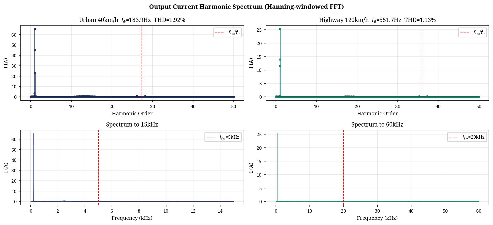
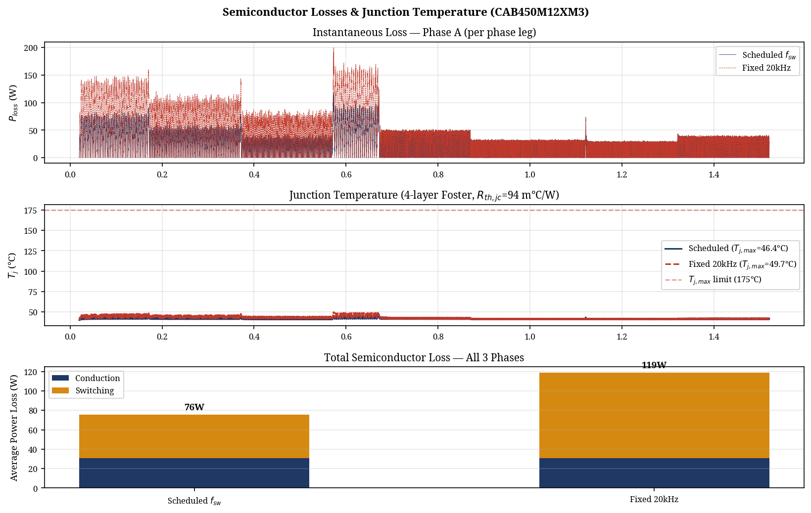

Abstract—This paper presents a comprehensive design, simulation, and switching loss optimization of a Three-Level Flying Capacitor (3L-FC) inverter for an 800V Electric Vehicle (EV) traction application. While 3L-FC topologies offer inherent dv/dt and harmonic benefits over two-level designs, their efficiency depends heavily on the switching frequency schedule. By mapping vehicle speed directly to inverter electrical parameters (fundamental frequency and phase current) through mechanical drivetrain characteristics, a full driving spectrum analysis was conducted. Utilizing the Graovac-Purschel analytical method and datasheet parameters from a commercial 1200V, 450A SiC module (Wolfspeed CAB450M12XM3), the switching losses were quantified. Results show that an adaptive switching frequency schedule (5 kHz for urban, 20 kHz for highway) yields a 75% reduction in switching losses during high-current urban driving compared to a fixed 20 kHz baseline. Time-domain simulations further validate the design, demonstrating successful natural capacitor balancing, a low Total Harmonic Distortion (THD) of 1.92% at urban speeds, proper pre-charge transient handling, and safe thermal operation.
I. Introduction
The rapid evolution of Electric Vehicles (EVs) is driving a shift from traditional 400V to 800V DC bus architectures. This transition enables faster charging times, reduced cable weight, and higher overall system efficiency [1]. However, the increased DC link voltage presents significant challenges for the traction inverter, primarily concerning semiconductor voltage ratings, electromagnetic interference (EMI), and the dv/dt stress imposed on motor windings [2].
Traditional two-level voltage source inverters (2L-VSI) require semiconductor devices with blocking voltages of at least 1200V. While Silicon Carbide (SiC) MOSFETs meet this requirement, their fast switching speeds exacerbate dv/dt stress, leading to premature motor insulation failure [3]. Multilevel inverters, such as the Three-Level Flying Capacitor (3L-FC) topology, offer a compelling solution. By synthesizing the output voltage from multiple discrete levels, they inherently reduce the voltage step size and improve the harmonic profile [4].
This paper details the design of a 3L-FC inverter tightly coupled to the physical vehicle architecture. It investigates both the time-domain performance (capacitor balancing, THD, thermal behavior) and an analytical switching loss profile driven by the mechanical drivetrain parameters across the full vehicle speed range.
II. Inverter Topology and Modulation
A. Three-Level Flying Capacitor Topology
The 3L-FC inverter utilizes a pre-charged capacitor (the "flying" capacitor, Cfc) in each phase leg to synthesize three distinct voltage levels: +Vdc/2, 0, and -Vdc/2. Each phase leg consists of four active switches (S1 to S4). For an 800V bus, the flying capacitor is nominally charged to Vdc/2 (400V).
B. Phase-Disposition PWM and Natural Balancing
Phase-Disposition PWM (PD-PWM) is employed to generate the gating signals. A critical advantage of the 3L-FC topology is the availability of redundant zero states, which produce the same output voltage but have opposite effects on the flying capacitor current. The control logic actively selects between these states based on the measured phase current direction and the deviation of Vfc from its 400V reference, ensuring the flying capacitor remains naturally balanced without complex closed-loop PI controllers [5].
III. Vehicle Architecture and Operating Points
To accurately model inverter losses and performance, the electrical operating points must be mapped from the vehicle's mechanical state. The test vehicle architecture is defined by an 800V DC bus, a single-speed reduction gear (ratio G = 8.19), a tyre radius (r) of 0.315 m, and an 8-pole Permanent Magnet Synchronous Motor (pole pairs p = 4).
A. Speed to Frequency Mapping
The fundamental electrical frequency (fe) required by the motor is directly proportional to the vehicle speed (v, in m/s):
Urban driving (40 km/h) requires a relatively low electrical frequency of 184 Hz, while highway cruising (120 km/h) demands 552 Hz.
B. Current Profile Constraints
The inverter was modeled driving an RL load (R=1.3Ω, L=2mH). Because the load impedance increases with frequency, the peak phase current (Ipk) is inversely proportional to vehicle speed. Urban driving represents the highest current stress (136 A at 40 km/h), while highway driving draws significantly less current (51 A at 120 km/h).

IV. Analytical Switching Loss Optimization
To quantify the efficiency impact of the drive frequency, the industry-standard analytical method proposed by Graovac and Purschel [6] was utilized. This method calculates the duty-cycle-weighted average switching loss over a fundamental cycle.
A. The Graovac-Purschel Method for 3L-FC
The total switching energy (Esw = Eon + Eoff) of a SiC MOSFET scales approximately linearly with commutated current and voltage. By integrating the switching energy over a sinusoidal current half-wave, the average switching power loss per phase (Psw) for a 3-level inverter can be expressed as:
Where Nc is the number of switches commutating per PWM transition (Nc = 2 for 3L-FC), Esw_ref is the datasheet reference switching energy at Iref and Vref, and Vdc_sw is the voltage blocked by the switch (Vdc/2 = 400V).
B. Device Calibration
The analytical model was calibrated using parameters from the Wolfspeed CAB450M12XM3 1200V, 450A SiC module [7]. The reference switching energies are Eon = 25.4 mJ and Eoff = 7.51 mJ at Iref = 450A and Vref = 600V.
C. The Case for Adaptive Switching Frequency
The results reveal that operating at a fixed 20 kHz carrier frequency—while necessary for high-speed highway driving to maintain an acceptable frequency modulation ratio (mf = fsw / fe > 9)—is severely sub-optimal for urban driving. At 40 km/h, the high phase current (136 A) combined with a 20 kHz switching frequency generates 84.3 W of switching loss per phase.
Because switching loss scales linearly with fsw, reducing the carrier frequency to 5 kHz during urban driving cuts the switching loss to just 21.1 W per phase. This is permissible because the fundamental frequency at 40 km/h is only 184 Hz, yielding a safe modulation ratio (mf = 27) even at 5 kHz.

| Metric | Urban (40 km/h) | Highway (120 km/h) |
|---|---|---|
| Electrical Freq (fe) | 183.9 Hz | 551.7 Hz |
| Peak Current (Ipk) | 135.8 A | 51.0 A |
| Fixed 20kHz Sw. Loss | 84.3 W/phase | 31.7 W/phase |
| Scheduled Sw. Loss | 21.1 W/phase (5kHz) | 31.7 W/phase (20kHz) |
As detailed in Table I and Fig. 3, the adaptive schedule (5 kHz for <60 km/h, 10 kHz for 60-80 km/h, 20 kHz for >80 km/h) yields a massive 75% reduction in switching losses during urban driving, equating to a saving of nearly 190 W (3-phase) at 40 km/h.

V. Time-Domain Simulation Results
To validate the operational stability of the design, a full time-domain simulation was constructed in Python using the datasheet-calibrated parameters.
A. Flying Capacitor Balancing and Pre-Charge
The flying capacitor was sized to 680 µF based on a 5% allowable voltage ripple budget (20V at 400V nominal) at the worst-case urban operating point (136 A, 5 kHz). A critical operational requirement is the pre-charging of the flying capacitor to prevent severe overvoltage across the inner switches at startup. The simulation incorporates a 20ms pre-charge sequence, linearly ramping Vfc to 400V before active PWM switching commences. As shown in Fig. 4, the PD-PWM balancing algorithm maintained the flying capacitor voltage exceptionally well, with a mean error of less than 0.04V from the 400V reference and a simulated urban ripple of 17.97V (matching the analytical 20V budget).

B. Electrical Performance and THD
The inverter successfully synthesized the three-level output voltage. The Total Harmonic Distortion (THD) of the phase current, calculated using a Hanning-windowed FFT, was excellent: 1.92% for the urban segment (5 kHz) and 1.13% for the highway segment (20 kHz), as shown in Fig. 5.

C. Thermal Analysis
The thermal performance of the CAB450M12XM3 module was evaluated using a 4-layer Foster network derived directly from the datasheet transient thermal impedance curves. With the adaptive switching frequency schedule, the maximum junction temperature reached only 46.4°C (assuming a 40°C ambient/coolant base), providing a massive 128.6°C margin to the module's 175°C limit. This confirms that the selected module and adaptive frequency strategy provide exceptional thermal reliability.

VI. Conclusion
This paper demonstrated that traction inverter design and optimization cannot be conducted in isolation from the vehicle architecture. By mapping mechanical vehicle speed to inverter electrical parameters, a comprehensive switching loss profile was generated using the Graovac-Purschel analytical method. The analysis proved that while a high switching frequency (20 kHz) is required for high-speed highway driving to maintain waveform quality, applying this fixed frequency to high-current urban driving results in severe efficiency penalties. Implementing a speed-adaptive switching frequency schedule in the 3L-FC inverter reduced urban switching losses by 75%, saving 190 W (3-phase) while maintaining excellent FC voltage balancing, low THD (<2%), and safe thermal operation. This approach significantly improves overall drivetrain efficiency where EVs spend the majority of their operational life.
References
[1] T. Modeer et al., "Multilevel Inverters for EV Traction Applications: A Review," IEEE Transactions on Transportation Electrification, 2020.
[2] "A Closer Look at Multilevel Traction Inverters," Charged EVs, 2023.
[3] Texas Instruments, "EV Traction Inverter Design Priorities," Whitepaper SPRAD58B.
[4] TDK EPCOS, "Capacitors for DC Link and Flying Capacitor Applications," Product Guide.
[5] D. Graovac and M. Purschel, "IGBT Power Losses Calculation Using the Data-Sheet Parameters," Infineon Application Note AN 2009-05, Jan. 2009.
[6] Wolfspeed, "CAB450M12XM3 1200V, 450A SiC Half-Bridge Module Datasheet," Rev. 3, June 2024.